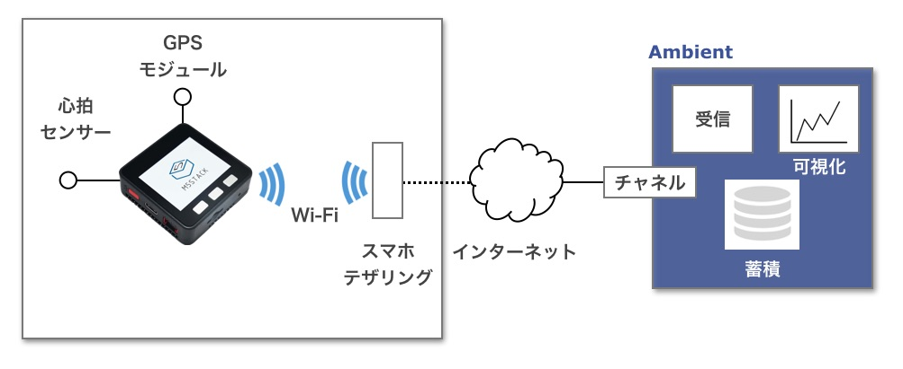
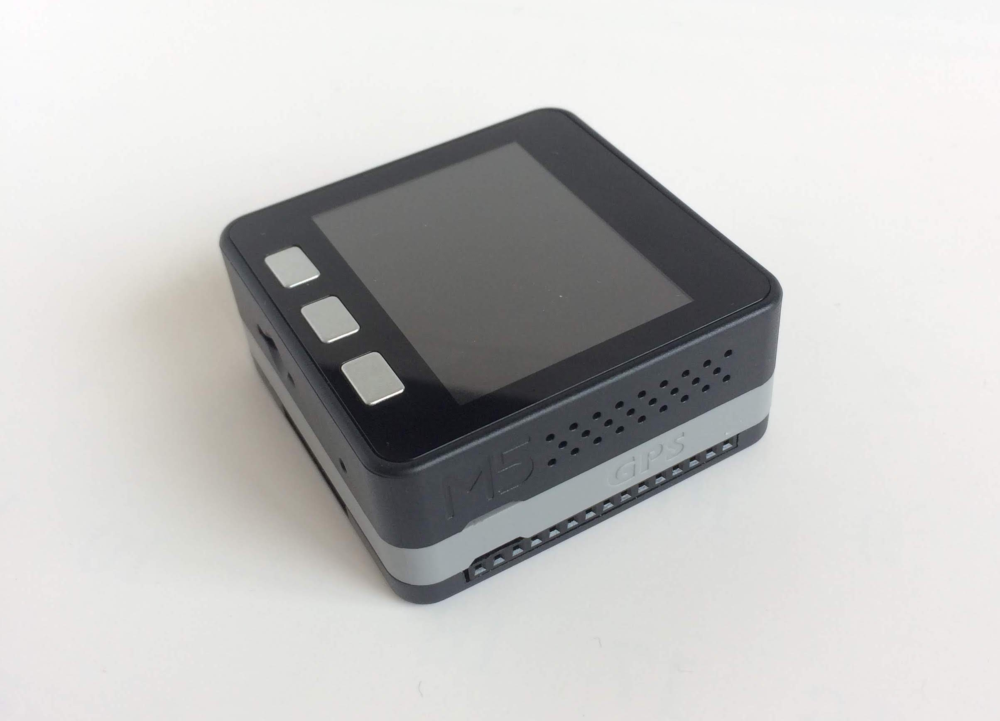
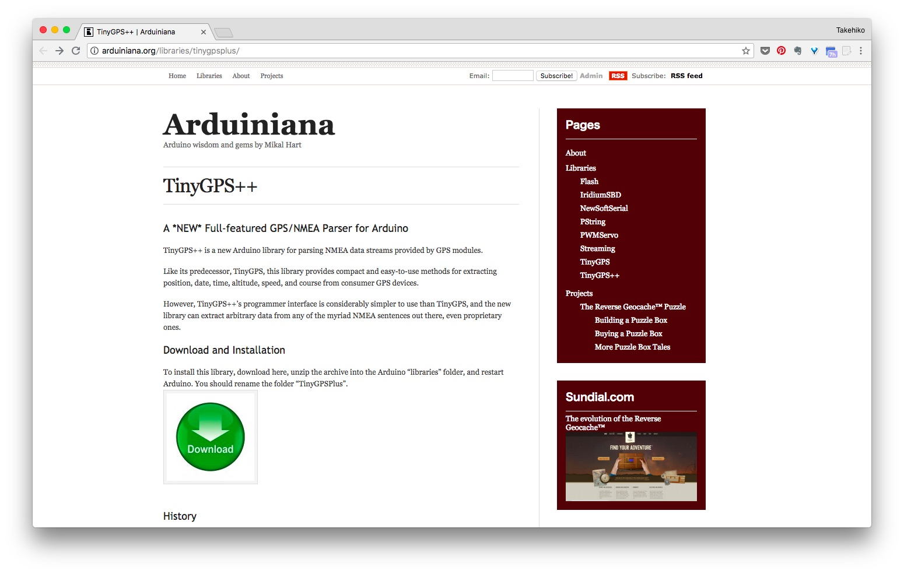
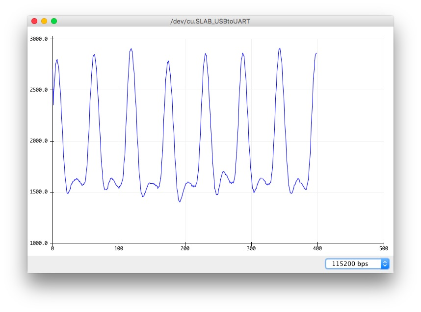
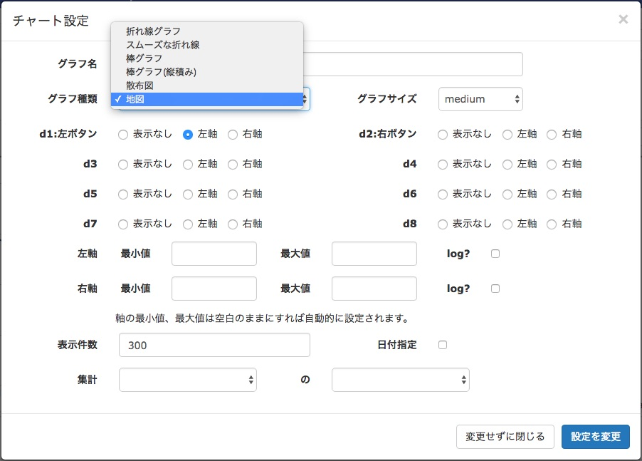
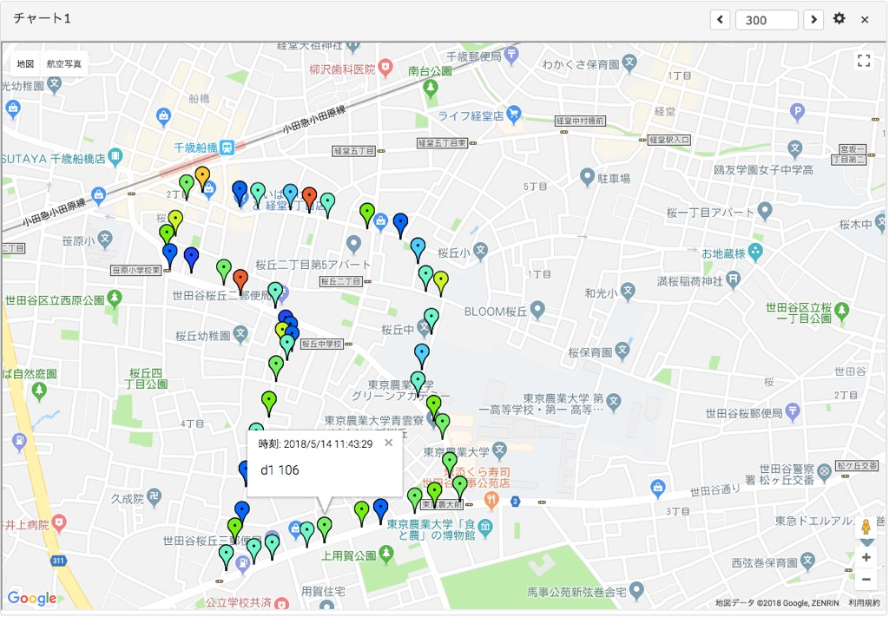

「AmbientでIoTをはじめよう」の第7回は、M5Stackに接続できるGPSモジュールと心拍センサを使い、 散歩やサイクリングなど、移動中の位置と心拍数を記録するGPS付き心拍ロガーを作ります。

M5Stackはいろいろな専用モジュールを積み重ねることで機能拡張できるIoT端末です。 モジュールの一つにGPSモジュールがあり、今回はこれを使い、位置を測定します。 心拍を光学式の心拍センサで測定し、位置データと合わせてWi-Fiでモバイルルータに送り、 モバイルルータからIoTデーター可視化サービス「Ambient」に送信します。 実際にはモバイルルータの代わりにスマホのテザリング機能を使いました。
心拍データを送信するタイミングは、一定時間ごとに送信、一定の距離を移動したら送信、ユーザーがボタンを押したら送信などアプリケーションによって様々な方法が考えられます。 今回は一定時間ごとに送信することにしました。
M5Stackは32ビットマイコンESP32を搭載したIoT端末で、Wi-FiやBluetoothで通信できます。 320 x 240 TFTカラーディスプレイ、ボタン、スピーカーなどが5cm角のコンパクトなケースに収められています。 詳しくは以下のサイトをご覧ください。
位置を測定するGPSモジュールはM5Stackの専用拡張モジュールの一つです。 u-blox社のNEO-M8NというGPSチップが搭載され、シリアル通信でGPSデータを送ります。

心拍の測定にはpulsesensor.comの光学式の心拍センサを使いました。 光学式心拍センサは、ある周波数の光を皮膚にあてると血流量に応じて反射光が変化することから、反射光を光センサで受けて血流量の変化を測定するものです。 今回使った心拍センサはArduinoライブラリがあるので、比較的簡単に扱えます。

今回使用した部品をまとめました。
| 部品 | 個数 |
|---|---|
| M5Stack Basic | 1個 |
| M5Stack用GPSモジュール V2 | 1個 |
| 心拍センサ | 1個 |
まずGPSモジュールの動作確認をします。M5Stackの環境設定は 「M5Stackでセンサデータを測定し、クラウドに送る (Arduino編)」をご覧ください。
まず、GPSモジュールの動作確認をします。GPSモジュールをM5Stackに写真のように積み重ねます。 外部アンテナを接続し、アンテナモジュールを窓際など空がなるべく広く見える場所におきます。

GPSモジュールのサンプルプログラムはArduino IDEのファイル > スケッチ例 > M5Stack > Modules > GPS > GPSRawにあります。 このプログラムを参考にもう少し簡単にしたものが次のプログラムです。
3行目にあるように、GPSモジュールはハードシリアル2に接続されています。 loop()関数の中で、GPSモジュールに文字があるうちは文字を読んでシリアルに書いています(12行目)。 プログラムをビルドして動かし、シリアルモニタに次のような文字列が出力されれば、GPSモジュールは動作しています。 なお、文字列の内容はGPS衛星から受信するデータにより異なります。
$GNGGA,075808.00,3538.58688,N,13937.58944,E,1,09,1.06,41.7,M,39.2,M,,*79
$GNGSA,A,3,03,07,22,30,17,18,11,01,08,,,,2.08,1.06,1.78*1E
$GNGSA,A,3,,,,,,,,,$GNRMC,075809.00,A,3538.58688,N,13937.58910,E,0.097,,260518,,,A*67
$GNVTG,,T,,M,0.097,N,0.180,K,A*3A
$GNGGA,075809.00,3538.58688,N,13937.58910,E,1,09,1.06,42.3,M,39.2,M,,*7E
$GNGSA,A,3,03,07,22,30,17,18,11,01,08,,,,2.08,1.06,1.78*1E
$GNGSA,A,3,,,,,,,,,$GNRMC,075810.00,A,3538.58677,N,13937.58910,E,0.064,,260518,,,A*63
$GNVTG,,T,,M,0.064,N,0.118,K,A*37
$GNGGA,075810.00,3538.58677,N,13937.58910,E,1,09,1.06,42.7,M,39.2,M,,*72
$GNGSA,A,3,03,07,22,30,17,18,11,01,08,,,,2.07,1.06,1.78*11
これはNMEA-0183フォーマットというフォーマットの文字列で、 時刻、緯度、経度、海抜高度、測位に利用した衛星の数やID、それぞれの衛星の位置(方位角と仰角)などの情報が含まれています。 例えば先頭の行は次のような情報を表しています。
| 意味 | 値 |
|---|---|
| トーカID | GN: (GNSS(Global Navigation Satellite System)) |
| タイプ | GGA(Fix information) |
| 測位時刻(UTC) | 7時58分08秒 |
| 緯度 | 3538.58688 |
| 緯度方角 | N |
| 経度 | 13937.58944 |
| 経度方角 | E |
| Fixタイプ | 1: GPS Fix |
| 測位利用衛星数 | 09 |
| 水平精度低下率 | 1.06 |
| 海抜高度 | 41.7 |
| 高度単位 | M |
| WGS-84座標系海抜高度差 | 39.2 |
| 単位 | M |
| DGPSデータ残存時間 | – |
| チェックサム | 79 |
GPSからの生データを解析して、プログラムで扱いやすいデータにするライブラリがあります。 GPSモジュールのサンプルプログラムFullExample ではTinyGPS++というライブラリが使われています。
TinyGPS++のインストールは、TinyGPS++のサイトに行き、 ダウンロードアイコンの先の最新ZIPファイルをダウンロードし、Arduino IDEで「.ZIP形式のライブラリをインストール…」 でZIPファイルをインストールします。

シリアルから読んだGPSデータを1文字づつライブラリに渡すと、それを解析し、GPSオブジェクトを更新します。 解析中はfalseが返り、1行処理して解析が成功するとtrueが返されます。次のサンプルプログラムで緯度経度が確認できます。
14行目のwhileループでGPSからの文字データがある間は文字を読み、1行の解析が成功するとループを抜けます(15、16行目)。 13行目のlocation.isUpdated()はGPSオブジェクトが更新されるとtrueになります。 位置が変らなくても、データが更新されればtrueになります。
次に心拍センサの動作を確認します。今回使った心拍センサは電源、GNDと信号線の3本でマイコンなどと接続します。 信号線の電圧が血流量に応じて変化します。そこで信号線をM5StackのGPIO36につなぎ、analogRead()でその値を読み、 シリアルに出力して、Arduino IDEのシリアルプロッターで値を確認しました。
プログラムは次のようになります。
センサを指などにつけ、プログラムを動かし、Arduino IDEのシリアルプロッタを立ち上げると、 次のような心拍波形が確認できます。

この生データから心拍間隔や1分間の心拍数を求めるライブラリが用意されています。 オリジナルのライブラリはESP32 Arduinoに対応していないので、対応したものを作って次の場所に置きました。
このサイト右上の「Clone or download」の「Download ZIP」をクリックしてZIPファイルをダウンロードし、 Arduino IDEで「.ZIP形式のライブラリをインストール…」 でZIPファイルをインストールします。
setup()関数の中で次のように初期化をおこなうと、タイマ割り込みで2ミリ秒間隔に心拍センサの値を測り、 心拍数などが計算されます。
pulseSensor.analogInput(PIN_INPUT);
pulseSensor.setSerial(Serial);
pulseSensor.setOutputType(OUTPUT_TYPE);
pulseSensor.setThreshold(THRESHOLD);
pulseSensor.begin();
pulseSensor.getLatestSample()で最新のサンプル値が、 pulseSensor.getBeatsPerMinute()で1分間の心拍数が得られます。
このライブラリを使い、心拍波形と心拍数をM5StackのLCD画面に描くサンプルプログラムを作りました。
心拍センサを指などにつけ、プログラムを動かすと、次のように1分間の心拍数と心拍波形が表示されます。
GPSと心拍センサの動作確認ができたら、この二つを組み合わせて、一定時間ごとに心拍数と位置情報をAmbientに送信します。 loop()関数の主な処理は次のようになります。細かな処理は省略しています。
これで20ミリ秒ごとに心拍センサの値をLCDに描画しながら、30秒ごとにその時の心拍数と位置情報をAmbientに送信します。 プログラムの全体は下記に公開しました。
Ambientには位置情報のついたIoTデータを受信し、地図上に表示する機能があります。 Arduinoの場合、通常の1から8までのデータに加えて、データ9に緯度を、データ10に経度を指定すると位置情報付きのデータになります。
データを地図上に表示するときは、チャート設定画面でグラフ種類として「地図」を選択します。

チャート画面は次のようになります。

プロットはデータの値によって色を変えて表示されます。 プロットをクリックするとその地点のデータがポップアップして表示されます。
チャート画面はスマホのブラウザでも確認できます。センサ端末を持って移動しながらデータを測定し、 スマホのテザリング機能でデータをAmbientに測定し、測定結果をその場でスマホで確認できるので、非常に便利です。
位置情報付きのセンサデータは、今回の散歩中あるいはサイクリング中の心拍数といったホビーユースものや、 車両の位置と時刻、その時のエンジンの回転数の記録、場所ごとの無線の信号強度の記録などビジネスユースのものまで幅広い応用が考えられます。
M5StackはGPSモジュールもあり、コンパクトで持ち運びにも適しています。 位置情報付きのセンサデータ端末としての利用も拡大しそうです。
この記事はアンビエントデーターの下島が担当しました。